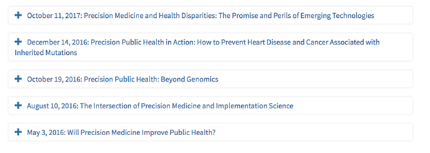
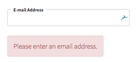

Pattern Library
Navigation
Section Menu
The section menu displays pages nested under the current section and offers the user a way to navigate within the section.
Content Guide
Usage: Subpages
••• Show Code Snippet
Tabs
Tabs are used within a page to group substantial related information that warrants organization. Use tabs when you need information to be highly scannable and simple to navigate. When a tab is selected, it should be clear to the user which tab they are on.
••• Show Code Snippet
Tables + Accordions
Tables
Good data tables allow users to scan, analyze, compare, and visualize information. Tables should be used when displaying tabular data. The thead, tfoot and tbody elements enable you to group rows within each a table.
If you use these elements, you must use every element. They should appear in this order: thead, tfoot and tbody, so that browsers can render the foot before receiving all the data. You must use these tags within the table element.
| Ingredients | Serves 12 | Serves 24 |
|---|---|---|
| Milk | 1 quart | 2 quart |
| Cinnamon Sticks | 2 | 1 |
| Vanilla Bean, Split | 1 | 2 |
| Cloves | 5 | 10 |
| Mace | 10 blades | 20 blades |
| Egg Yolks | 12 | 24 |
| Cups Sugar | 1 ½ cups | 3 cups |
| Dark Rum | 1 ½ cups | 3 cups |
| Brandy | 1 ½ cups | 3 cups |
| Vanilla | 1 tbsp | 2 tbsp |
| Half-and-half or Light Cream | 1 quart | 2 quart |
| Freshly grated nutmeg to taste |
Accordions
Accordions should be used to expose content in a progressive manner. Accordions can be useful when there is lengthy information. Accordion headers serve as a menu, allowing users to see content topics at a glance and select appropriate content. Accordions may also be useful when displaying an agenda or several events in a series.
Content Guide
Title: Choose concise wording for headers. Each header should follow a similar pattern for easy scanning.

Accordion 1: DCCPS Accordion
••• Show Code Snippet
Accordion 2: Program Area Accordion
••• Show Code Snippet
Form Elements
Buttons
Buttons should be used in cases where the user will take a primary action. Buttons have a hover state to engage the user.
Content Guide
Copy: Follow writing for web best practices. Label buttons clearly with action words that are specific to the outcome.
Button 1: Program Area Primary
••• Show Code Snippet
Button 2: DCCPS Primary, Program Area Secondary
••• Show Code Snippet
Navigation Pill
Navigation pills are used to call attention to links, especially when there are several listed together. When linking to a document, it is good practice to indicate it with an icon. Each pill has a hover state to engage the user.
Content Guide
Copy: Follow writing for web best practices. Label buttons clearly with action words that are specific to the outcome or clearly describe the item.
Pill 1: Group of navigation pills
••• Show Code Snippet
Pill 2: Navigation Pill with icon
••• Show Code Snippet
Text Input
Input fields should have the label placed above the field.
Content Guide
Copy: Input labels should be clear, succinct, and descriptive. Limit to a word or two. If extra information is needed, use help text to clarify.
••• Show Code Snippet
Input Validation
When a field error occurs, display an alert. The alert should be placed near the related field.
Content Guide
Copy: Alert messaging should be specific to the problem at hand and direct the user toward a solution.

••• Show Code Snippet
Radio
Radio buttons should be used when choices are mutually exclusive. Options should be listed in a logical order, for example:
- Most likely to be selected to least
- Simplest to complex
- Least risk to most
It is best practice to always have one option pre-selected. Be sure to select the safest, most secure, and private option.
Radio lists should be laid out vertically with one choice per line for easier readability.
••• Show Code Snippet
Cards
Cards
Cards are used to contain information. One card should contain only one concept and content within the card should be limited. The entire card should be clickable. A shadow is used to emphasize the objectivity of the card and a hover state is used to assist the user in knowing how to interact with the card.
Content Guide
Title: 3-5 words
Card Copy: 25 words
Usage: Exclusive designs for DCCPS and program area sites. Note that the program area design utilizes a brand-specific color in the top border.
Card 1: DCCPS Card
••• Show Code Snippet
Card 2: Program Area Card
••• Show Code Snippet
Cards with Icons
Cards with icons should be used where special interest is needed. The icon should be relevant to the content in the card and follow brand style. Individual or multiple cards may be used in a row. The full card is clickable and there is a hover state with animation.
Content Guide
Card Title: 2-3 words
Card Copy: 25 words
••• Show Code Snippet
Contact Cards
Wide Contact Card
This full-width card is used to contain contact information for directors or grantees. Each card includes:
- Portrait
- Name with credentials (linked to bio page)
- Title
- Organization
- Email (linked)
- Phone number
- Research Areas (Director) or Quote (Grantee)
Content Guide
Usage: This card type should be used on a staff or grantee listing page.
Contact Card 1: Director’s Card
••• Show Code Snippet
Contact Card 2: Grantee Card
••• Show Code Snippet
Simple Contact Card
This contact card is displayed in a two-column grid. Contact cards may be used for staff or grantees.
Each card includes:
- Portrait
- Name with credentials (linked to bio page)
- Title
- Organization
- Email (linked)
- Phone number
Content Guide
Usage: This card type should be used on a staff or grantee listing page.
••• Show Code Snippet
Blocks
Included in the template are several options for content blocks. These can be used on any internal page unless otherwise noted. It is recommended to differentiate the background colors of the sections to aid the user visually as they scan a page.
Introduction Text Block
The introductory text block should provide a relevant overview of the section content using plain language. The purpose is to situate the user and engage them. Both landing page and subpage templates have an Introduction Block. Following web best practice, landing page copy should be shorter and subpage copy more detailed. As users get deeper into the site, they find more details.
This block may contain a promotional block to the right.
Content Guide
Landing Page Copy: around 250-500 characters
Subpage Copy: 1 – 2 short paragraphs or 500-600 characters
Promotional Blocks
Promotional Blocks may be used to highlight relevant content or call out timely information.
••• Show Code Snippet
There are several options to configure the block:
Headline, teaser text (1-2 sentences), and button
••• Show Code Snippet
Quick Links/Branches
Use this block of links whenever there is a related set of links such as a list of branches, or wherever the user needs quick access to priority content.
Content Guide
Usage: In any relevant section row on any page.
••• Show Code Snippet
Need Help?
The Need Help block is a small block that may be placed in the periphery of any section on a landing page or subpage. It should only be used in cases where high user need is anticipated; instead each page should strive to meet the users’ needs or direct users to a contact section within the page or on the About page.
••• Show Code Snippet
Rows with Cards
Use a Row with Cards block to highlight related items of interest. The section should include a title that is specific to the content highlighted. A teaser may be included to help introduce the user to the grouped content and help guide them to a choice.
Each card is linked and should have a headline and a teaser.
Content Guide
Card Title: 2-3 words
Card Copy: 50 words using active voice and plain language
Row with Two Cards
••• Show Code Snippet
Row with Three Cards
••• Show Code Snippet
Row with Four Cards
••• Show Code Snippet
Row with Six Cards
••• Show Code Snippet
Other Rows
Simple Row
Use a Simple Row with text to present a group of information.
Content Guide
Title: 2-5 words
Copy: No more than 5 short paragraphs
Usage: Any program area landing page or subpage.
••• Show Code Snippet
Row with Quote
A quote may be featured in a row when relevant to page flow and it is recommended to include a photo when possible for user interest.
••• Show Code Snippet
Row with a Call To Action (CTA)
Simple CTA
Use this row type when directing the user toward an action. Provide a teaser so the user understands the context surrounding the action.
Content Guide
Title: 2-3 words
Copy: Short teaser no more than 50 words.
Usage: Any landing page or subpage.
••• Show Code Snippet
CTA with Image
Use this row type when directing the user toward an action. Provide context surrounding the action so the user understands what will happen next and can decide if it is the right action for them.
Content Guide
Title: 2-5 words
Copy: 1-2 short paragraphs
Usage: Any landing page or subpage.
••• Show Code Snippet
Three Column Row
Use this row type to present grouped tertiary information.
Content Guide
Title: 2-5 words
Copy: 1-2 sentences
Usage: Any landing page or subpage
Split Row
Rows may be split into two subsections. Each subsection should have a title, teaser text, and navigation pills. Subsections in a row should be related.
Content Guide
Title: 2-4 words
Subtitles: 3-5 words
Copy: Short teasers describing the content and actions.
Usage: Any landing page or subpage where two smaller, relevant sections make sense together.
Split Row 1: DCCPS Split Row
Split Row 2: Program Area Split Row
••• Show Code Snippet
Contact Block
The Contact Block is usually featured toward the bottom of a page and lists relevant contacts. This block may feature 1-3 contacts, each making up a column in the row.
Each contact listed contains:
- Portrait (optional)
- Name
- Email (linked)
- Title
- Organization
••• Show Code Snippet
Icons
.explore-icon.funding-opportunities
.explore-icon.meet-our-staff
.explore-icon.webinars
.explore-icon.featured-publications
.explore-icon.grantee-profiles
.explore-icon.up-to-date
.explore-icon.research-interests
.explore-icon.research-resources
.explore-icon.jobs
.explore-icon.questions
.explore-icon.data
.explore-icon.research-portfolio
.explore-icon.grant-applications
.explore-icon.current-grants
.explore-icon.information
.explore-icon.branches